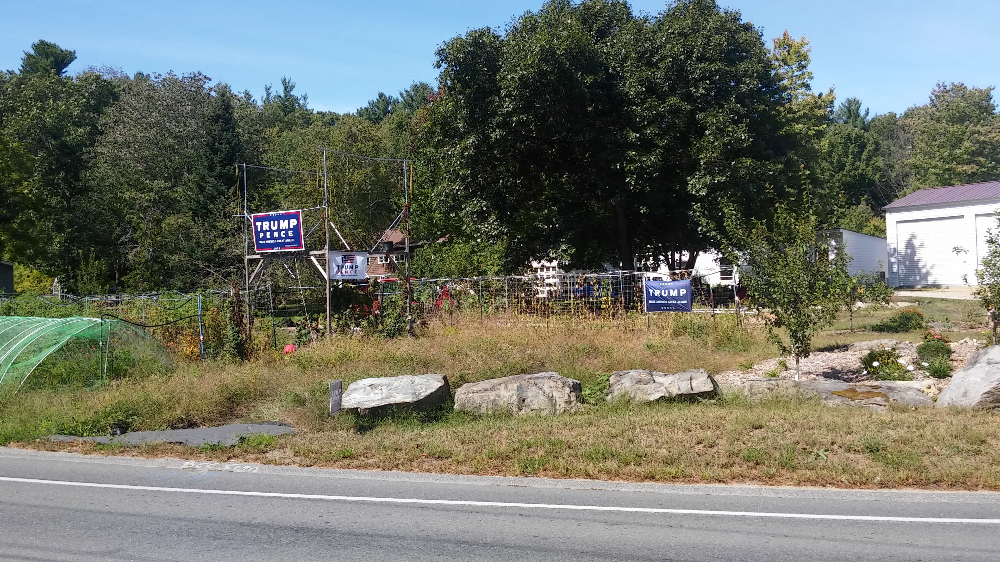

Samseau is a player philosopher psychologist who enjoys a good discussion. You can follow him on Twitter.


This is the final installment of a four-part series. You can read the third part here.
I began working for the Trump campaign in NH as a volunteer, working Saturdays through September. My performance was so good they wanted to offer me a full-time position, but they could not give me a spot because of corruption. There was already an affirmative action hire in the spot as a full-time door-knocker, but all she did was fabricate responses in the app used for voter data. She would pretend like she’d be going out to go do her job, and then punch in a bunch of fake data about how many doors she knocked, who people were voting for, etc, while drinking a beer.
It was massive fraud. She’d complete about 1-2K false entries per day and although she’d often get caught, the bosses she worked for liked the fact she inflated the numbers. Her bosses could then report up the GOP chain of command that they had knocked on so many doors to look good for their district.
This fraudulent woman probably cost Mr. Trump about 500 votes. She may have cost Kelly Ayotte, the Republican candidate for the Senate, the election. She was working in a heavy Republican town, Salem, NH, for months and had the important job of building up voter morale, persuading undecideds, and potentially flipping some Dems. Instead, between August and halfway through October, this woman was punching in fraudulent information.
My good friend whom was in charge of the Salem Trump office could not get this woman fired despite telling his higher ups numerous times about the ongoing fraud. He had been complaining for weeks, and he had to continuously delete her data only for her to punch it in fraudulently again the following day. It was an infuriating display of cuckservatism.
So they could only sign me up on a part-time basis at first, but eventually my friend put his foot down and said if they didn’t get rid of her and replace her with me, he would no longer care about meeting his quotas of voter turnout for the town and such. They fired her and I got the full time position with about two weeks left to go.

As dedicated as the Trump campaign’s team of volunteers who were flooding across Massachusetts were, the Clinton team also had a well-organized, and well-paid ground-game around NH as well. Combined with the media propaganda, the NH campaign was a constant uphill battle. The Dems spent a whopping $48.4 million, the second highest in the country, just on the Senate race alone! I remember on one occasion how an elderly man, after learning I was there on behalf of the Republican party and Trump, said to me, “I SAW ON TV TRUMP WANTS TO GIVE NUKES TO EVERYBODY,” and slammed the door in my face. Hilarious but sad at the same time. TV is evil. I tell everyone I know to cancel their cable.
As a result, it was NH that cost Hillary the election. For whatever reason, her team was panicking at the thought of losing NH to Trump, so they pulled out all the stops and devoted a tremendous amount of resources to securing that state. Including many of the coveted and rare Hillary appearances. Trump, being a living machine, was able to make campaign stops everywhere all over the country – including many appearances in NH. Apparently, this caused the Clinton team to over-react and devote disproportional resources in order to secure NH. In hindsight, we know Hillary and her team should have been focusing much more on WI and MI, but because they felt like these states were so reliably blue that all they needed to win was ensure NH stayed blue. And NH did go blue. But it came at a heavy price, a total pyrrhic victory for the Dems.

I would say Trump had a shotgun approach to campaigning – doing around 8-10 rallies a week or so himself, whereas Clinton had a sniper-rifle approach doing 3-5 appearances per week plus her incredible number of surrogates (the celebs, Bernie, the Obamas, etc, just to name a few). But surrogates are no substitute for the actual candidate, so Clinton needed to use her fewer appearances wisely, and she would come up to NH far more than she should have with such a limited schedule. She should have left NH more to her surrogates while she traveled to the rust belt to keep the blue wall secure. She never stepped in Wisconsin once, which anyone can clearly see was a tremendous mistake.
There was also the issue of UNH bussing in 6000 students and registering them at the voter booth in Durham, which reeks of fraud and bullshit as many of the students were from out-of-state. If this did not happen the Republicans would have won every race. But because voter laws are corrupt in NH, it was legal. It’s a rigged system, folks.
Regardless, not only did the enormous effort of the Democratic machine give Hillary the win in NH, but it also barely gave Hassan over Ayotte, Kuster over Lawerence, and many other local races. Ayotte pulled her endorsement of Trump and constantly bashed him, which significantly depressed her voter turnout in Republican towns. Ayotte performed worse than Trump in Republican towns, but better than Trump in Democrat towns.
There was also a third party Independent named Aaron Day, who simply hated Ayotte for personal reasons and ran just to steal her votes. She lost her campaign from many small cuts. Overall, the campaign against Trump was indeed very damaging to the rest of the down-ballot races, but Chris Sununu still managed to win big against heavy odds and secure a comfortable vote margin. So there is still a promising future for the Republican party in NH.

Moreover, there is a very promising future for the Republican party, and the rest of America, with President Donald J. Trump.